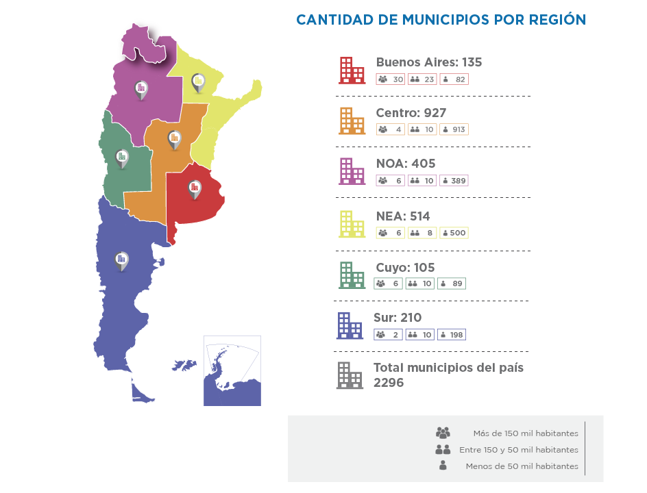
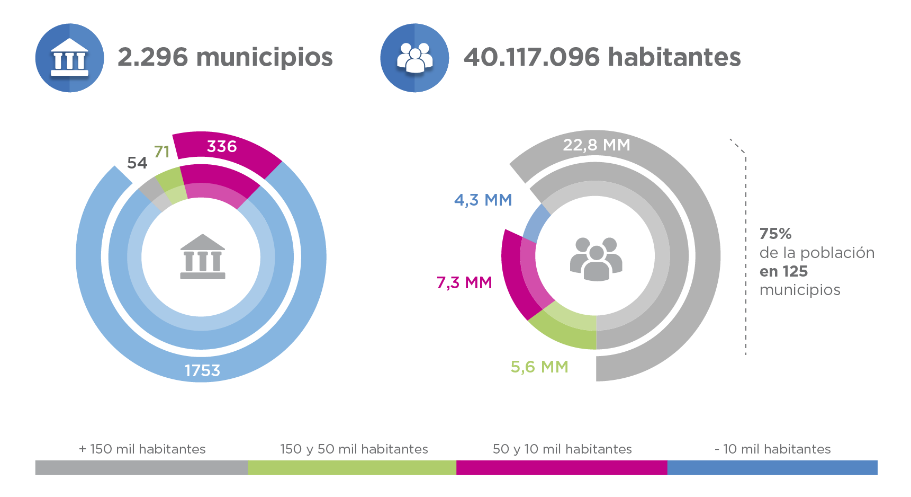

Territorio
El país está constituido por 2.296 municipios, desplegados en un vasto y diverso territorio. Coexisten a partir de sus diferencias geográficas y climáticas, sus distintos tamaños, economías y matrices productivas. Y muchas veces, realidades diferentes que requieren soluciones diferentes.
Nuestra principal y permanente tarea es recorrer ese territorio para conocer y entender la realidad de cada municipio, identificar sus necesidades y aportar soluciones. Y también para identificar aquellos casos exitosos que pueden ser replicados en todo el país.

